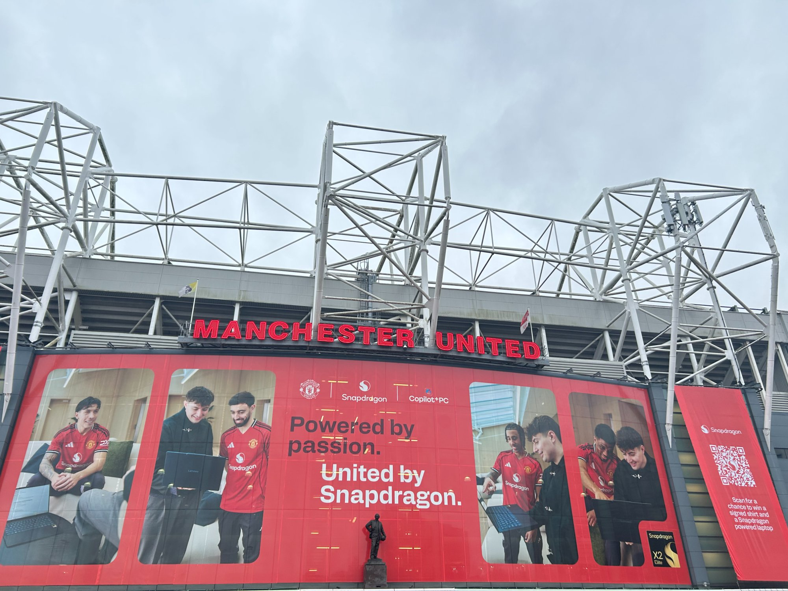
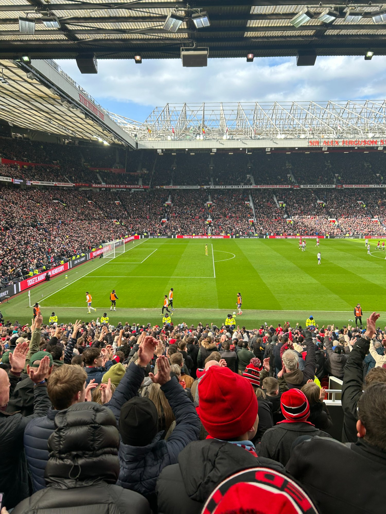

Old Trafford · Manchester, England
I Was There.
Standing outside Old Trafford. Walking through those gates. Hearing 74,000 people sing together. This is what it actually feels like to be a Manchester United supporter.
The Experience
The Theatre
of Dreams
Every Manchester United supporter has a dream. You want to actually stand inside Old Trafford, feel the noise hit you, and be surrounded by people who love this club as much as you do. I got to do that. And honestly it was everything.
Walking up to the ground for the first time and seeing that Manchester United sign in red above the stands felt like something out of a film. The stadium has this real weight to it before you even step inside. It looks exactly like the pictures but so much bigger in real life.
Inside it was loud from the first minute. Red and black everywhere you looked. The Stretford End was going from the opening whistle and that energy just spread through the whole ground. Looking out across that pitch with 74,000 people around you is something I will honestly never forget.
This trip changed how I think about the club. Old Trafford is not just a stadium. It is a place where the history of the game actually lives and breathes.

Match Day Footage
You Had to
Be There
Raw footage from inside Old Trafford. The crowd, the noise and the atmosphere captured live on the day.
Inside Old Trafford · Match day · Manchester, England
Photography
Shots From
the Ground
Inside Old Trafford · The Stretford End
Old Trafford Exterior · Match Day
Sir Alex Ferguson Stand · The Theatre of Dreams
Old Trafford is a very intimidating place to watch a game. The fans, the history, the atmosphere. It is the greatest stadium in the world.
The feeling every supporter gets when they walk through those gates
Continue Exploring